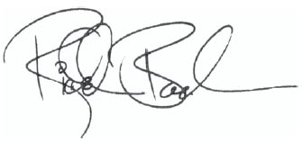

F UNA PREGUNTA que escuché en más de una ocasión después de la aparición de Juan Salvador Gaviota.
«¿Qué escribirás ahora, Richard? Después de Gaviota, ¿qué?»
Entonces contestaba que no tenía que escribir nada nuevo, ni una palabra, y que la suma de mis libros decía todo lo que me había propuesto hacerles decir. Cuando has pasado hambre durante algún tiempo, te han embargado el coche y te han sucedido cosas por el estilo, te sientes extraño al no tener que trabajar hasta medianoche.
Con todo, casi ningún verano olvidé a mi antiguo biplano. En él salía a sobrevolar los verdes océanos de nuestras praderas del Medio Oeste norteamericano. Cobraba tres dólares por pasajero y empecé a sentir que crecía la antigua tensión: aún quería decir algo; algo que no había dicho.
Escribir no me produce ningún placer. Si pudiera volverle la espalda a la idea agazapada en la oscuridad, si pudiera abstenerme de abrirle la puerta para dejarla entrar, ni siquiera cogería la pluma.
Pero alguna que otra vez se produce una gran explosión: cristales, ladrillos y astillas atraviesan violentamente la fachada, y un personaje se yergue sobre los escombros, me agarra por el cuello y me dice dulcemente: «No te soltaré hasta que me pongas en palabras, sobre el papel».
Así me encontré con Ilusiones.
Incluso ahí, en el Medio Oeste, me tumbaba boca arriba, vaporizando nubes, y no conseguía sacarme la historia de la cabeza… ¿Qué sucedería si apareciera un auténtico experto, capaz de explicarme cómo funciona mi universo y cuál es el sistema para domeñarlo? ¿Qué sucedería si encontrara a un superdotado… si visitara nuestro tiempo un Siddartha o un Jesús, con poder sobre las ilusiones del mundo merced a su conocimiento de la realidad que se oculta detrás de ellas? ¿Y qué sucedería si le encontrara en persona, si pilotara un biplano y aterrizara en el mismo prado donde lo hago yo? ¿Qué diría ese individuo, y cómo sería?
Quizá no se parecería al mesías de las páginas pringosas de mi diario, y tal vez no diría nada de lo que este libro dice. Pero si fuera cierto lo que me dijo él —por ejemplo, que materializamos magnéticamente en nuestras vidas todo aquello que albergamos en nuestro pensamiento—, estaría justificado, de alguna manera, el que yo haya llegado a este trance. Y lo mismo vale para ti. Quizá no tengas este libro en las manos por pura coincidencia; quizá hayas venido aquí para recordar algún elemento de estas aventuras.
He optado por pensar así. Y he optado por pensar que mi mesías está posado allí, en otra dimensión, y que no es en absoluto ficticio: nos vigila, y ríe porque encuentra divertido que las cosas sucedan tal como las hemos planeado.
